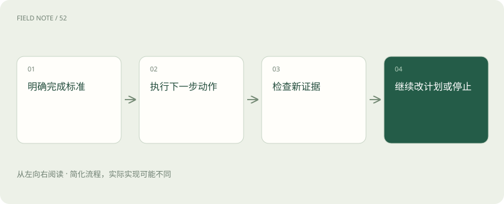

先读哪些知识
先用一个类比理解
像旅行计划，遇到封路要改路线，到站后就该停车。
类比只帮助建立直觉，不等同于技术的完整机制。
一图看懂

概念边界
计划把目标拆成可检查的步骤，但计划本身只是待验证的假设。执行一次工具调用后，应比较新证据与目标之间的差距，再决定继续、调整或结束，不能只因为还有步骤就机械执行。
内部怎样运作
停止条件包括目标达成、预算耗尽、证据不足、权限受限和重复失败。应记录完成标准与可接受的部分结果，区分工具失败和任务无解。需要人的决定时应提供具体选项及其后果。
把机制放进具体场景
助手要查明工单是否关闭，获得权威系统的关闭状态后就可结束。如果接口连续返回权限不足，重复查询并不会改变权限；应停止并解释缺少的访问条件。停止也可以是保留已查明部分，交付尚未解决的问题。
取舍与容易忽略的限制
完成标准需要能被外部结果验证，而不是由智能体主观宣布“已经充分”。若目标只是查状态，继续搜集无关解释会增加延迟；若目标包含执行操作，仅生成建议又不能算完成。计划更新还应保留已知约束，防止为了绕过一次失败而悄悄改变用户原本的任务范围。
放进真实场景
SCENARIO
整理报销材料时，缺少发票并不意味着应自行编造金额。助手可以先完成已有材料的归类，再明确指出哪项凭证决定任务能否最终提交。
别踩这个误区
循环次数增加不等于更可靠，重复同一失败动作可能只消耗预算。
想一想
工具连续超时，计划上还有步骤就必须继续吗？
不必，应检查总时限、重复失败和替代证据，必要时停止。
关联阅读
资料与边界
本文为原创知识讲解。类比和图示经过简化；示例数字不代表实测或报价。整理日期：2026-11-04。文末列出对应技术的原始资料，具体功能与版本支持请以原文为准。